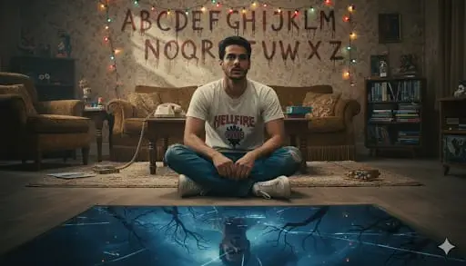
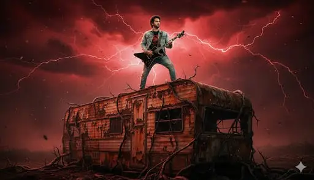

Want more awesome prompts?
Join our community and get the latest viral prompts daily.
Follow on Instagram
? AI PROMPT
A close-up, cinematic portrait of a young man(same facial structure as image), 20s, with a modern haircut (short on sides, longer on top, styled back). He has a serious, intense expression, looking directly forward. His face is strongly lit with a split lighting effect: a cool blue light on the left side of his face and a warm red light on the right side. He is wearing an unzipped, dark olive green military-style jacket over a plain white crew-neck t-shirt. Below him, in the foreground, is a highly detailed, small Demogorgon creature standing amidst a dark, organic, otherworldly landscape of twisted, slimy black vines, alien plant pods, and dark soil. The background is a smoky, ethereal blend of blue and red mist, creating a deep, atmospheric glow around the subject. The overall aesthetic is dark fantasy, sci-fi horror, and a professional movie poster quality, with dramatic shadows and highlights."

? AI PROMPT
Create a high-quality realistic photo using the face from the reference without any changes.• Character: a young, slender girl with long wavy hair, styled as Eleven from Stranger Things.• Blindfold: a USA-flag blindfold covering her eyes.Clothing: a short-sleeved collared shirt with a dense yellow-and-black geometric pattern, tucked into dark pants or jeans with crossedsuspenders; anay be visible.Footwear: light, chunky sneakers; a white bandage on her ankle.• Pose: sitting on the floor with her legs crossed or tucked under her, looking straight ahead with her mouth slightly open.Background: a vending machine or counter behind her with neat rows of waffle packages resembling Eggo.• Atmosphere: dark, cold, cinematic, with dominant blue and turquoise tones.• Style: dramatic, hyperrealistic, film-like, with an '80s retrowave mood; backlighting or vending-machine lighting creates deep

? AI PROMPT
Generate an official Stranger Things season poster in the exact style of Netflix’s promotional key art, using the person in the reference photo as the central protagonist. Strictly respect every visual detail from the reference: face, hair, expression, lighting, clothing, and pose must be identical. Place the other main characters (Eleven, Mike, Dustin, Lucas, Max, etc.) in the background in their classic poster poses. Include the iconic red Stranger Things logo typography, fog, Christmas lights, grandfather clock, Upside Down gate, and full retro 80s aesthetic exactly like the real posters.

? AI PROMPT
Turn the person in the reference photo into Chief Jim Hopper straight out of the Russian prison in Season 4, preserving 100% of their real facial features, beard length and style from the reference, eye intensity, scars, exact age and brutal expression. Show him shirtless with the massive flamethrower, body covered in sweat, blood, and ash, shaved head, dragon tattoo glowing under fire light. Background: burning Russian gulag, Demogorgon roaring in chains, snow mixed with fire. Lighting: intense orange fire light + cold blue snow reflections. Use gritty 35mm film look, smoke, embers, lens dirt, and maximum “I’m back from the dead” badass energy. Use the face from the uploaded reference image and preserve the same facial features – do not alter the face.

? AI PROMPT
Produce a dark, atmospheric scene inside the Creel House from Season 4. The person in the reference photo is now standing in the attic with Vecna’s grandfather clock behind them. Preserve every single facial detail, hair, eye direction, and expression from the reference image with zero deviation. Light them dramatically with a single hanging bulb swinging slowly, casting deep shadows and warm orange highlights exactly like the show’s cinematography. Dress them in 1950s-meets-1980s clothing with subtle blood stains and dust. In the background, show the stained-glass rose window glowing red, spiderwebs, floating vinyl records, and Vecna’s tentacles creeping along the walls. Add the signature red-black Upside Down particles in the air. Use Arri Alexa-style digital look mixed with 1980s lens diffusion, strong chiaroscuro lighting, and the eerie silence vibe of the Creel House scenes.

? AI PROMPT
Transform the person in the reference photo into a canonical Stranger Things character while keeping 100% of their real facial features, skin tone, eye shape, hair, expression, and exact age from the photo. Use the official visual style of the show (1980s photography, saturated colors, neon lighting, film grain). Dress them in iconic clothing from Season [insert season], place them in a typical Hawkins or Upside Down background, and add small authentic details like a nosebleed or telekinetic energy if it fits.

? AI PROMPT
Create a cinematic poster.Show the same person from the reference - sitting con the floor inside a retro 1980s living room - wearing a white and black Hellfire Club t-shirt, blue jeans, white sneakers, the person's expression should be tense and distracted, as senses something unsettling nearby. Behind the person on the wall, include the iconic alphabet painted in a messy, horror-style handwriting, with colorful Christmas lights hanging above each letter. The lights should glow faintly, adding a chilling ambience to the room. In the foreground, at the bottom of the image, show a cracked reflective surface leading into a dark supernatural world - like a portal to the Upside Down - where a distorted shadowy reflection of thesame person appears, surrounded by fog, branches, and eerie blue-black tones.The environment must feel nostalgic and haunted: an old sofa, vintage decor, muted colors, soft film grain, dust particles, and low warm lighting in the living room contrasted with cold, ominous tones in the reflection. Cinematic depth, realistic textures, supernatural tension, no text or titles anywhere

? AI PROMPT
A photorealistic ultra wide shot of this person standing bravely on the roof of a rusted mobile home trailer. They are wearing a Hellfire Club t-shirt, a light blue denim jacket, and light blue denim jeans. They are holding a black Explorer electric guitar in a heroic stance. The environment is the Upside Down dimension: ominous red stormy sky, red lightning, dark clouds, floating ash particles, and creepingvines.